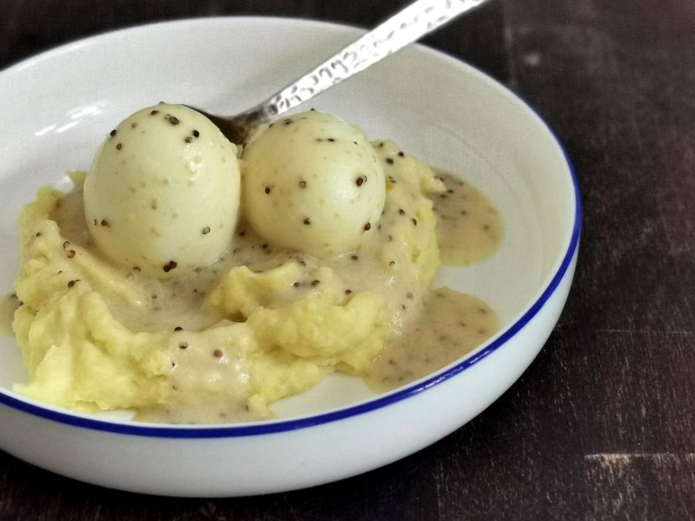

Recipe for Mustard Eggs

Description
This is a lovely dish, I know from my childhood. The Mustard Sauce combines wonderful with
the eggs and the smashed potatoes - indulging in a hilarious mass of tastyness
Ingrediens
To give four portions you will need:
- 12 g Schnittlauch
- 1 kg Potatoes
- 8 Eggs
- 60 g Whipped Cream/ Sour Cream
- 6 Tb Butter
- 6 Tb Mustard
- 6 Tb corny Mustard
- 1 Tb Sugar
- 650 ml Vegetabl broth
- 1 Tb Flour type 1050
- salt
- pepper
Steps to success
- Peel potatoes and cut them into small cubes
- Cook potatoes in salty water fpr about 15 minutes
- Boil water, then add eggs for about 7 minutes
- Heat butter in small pot, then add flour and stir for 1 min
- Add vegetable broth, stir 1 min
- Add whipped cream, both types of mustard, sugar, salt and pepper
- Peel Eggs and put them in the pot with the mustard sauce
- Add butter to the potatoes and smash them (wthout the Water!)
- Cut the Schnittlauch
- Serve with the mustard and eggs on tob of the smashed potatoes
- Enjoy! :)